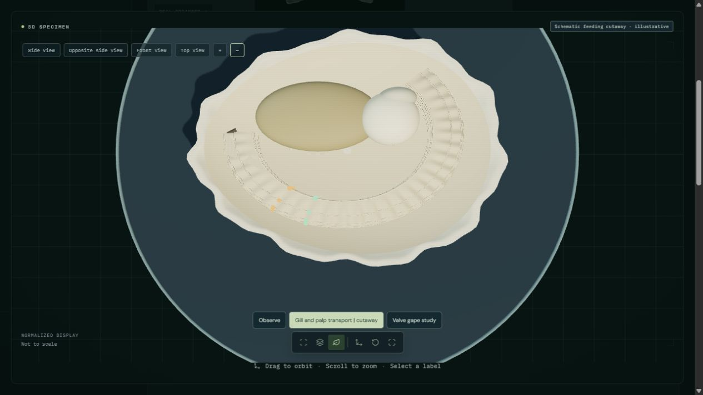
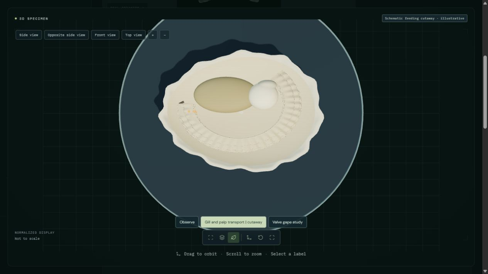
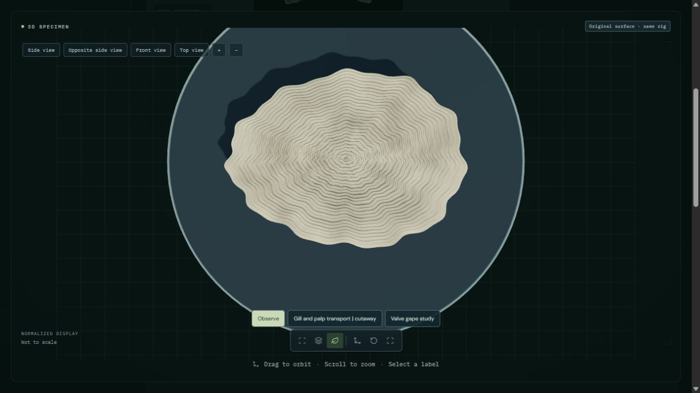

Open European flat oyster | Previous published study
An 18-second inspection cutaway exposes four folded gill demibranchs, axial and marginal food tracts, paired labial palps and one adductor. Enlarged markers follow both gill routes toward the palps. Accepted examples approach the mouth; rejected examples follow the upper palp margin and collect at the mantle margin. Palp flexion, geometry, marker outcomes and timing are authored. One valve is hidden for examination; this is not a natural opening posture.
Gill routes, palp flexion and pre-ingestive rejection illustrated. Selection, ciliary mechanics, mucus, fluid flow, valve-driven ejection and digestion are not simulated. Simplified authored tissues and shell; no physiological or photorealistic validation.



Green and amber indicate prescribed examples, not natural pigment or a particle-selection algorithm. Both transport routes include acceptance and rejection examples. Pseudofeces are material rejected before ingestion, distinct from feces. The cutaway separates inspection surfaces and uses simplified tissue; it is not a scanned dissection. Software checks cover finite paths, phase continuity, seeking and preservation of original shell attributes.
51 animal processes remain fully unavailable. Partial studies retain their limits. The jaguar resting prototype remains private and pending because local skin stretching is unresolved.